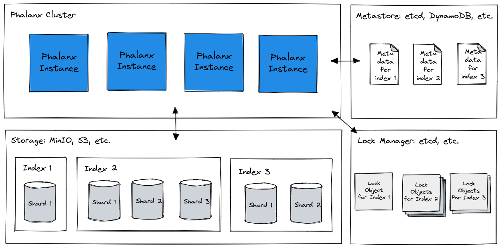

Phalanx
Phalanx is a cloud-native distributed search engine written in Go built on top of Bluge that provides endpoints through gRPC and traditional RESTful API.
Phalanx implements a cluster formation by hashicorp/memberlist and managing index metadata on etcd, so it is easy to bring up a fault-tolerant cluster.
Metrics for system operation can also be output in Prometheus exposition format, so that monitoring can be done immediately using Prometheus.
Phalanx is using object storage for the storage layer, it is only responsible for the computation layer, such as indexing and retrieval processes. Therefore, scaling is easy, and you can simply add new nodes to the cluster.
Currently, it is an alpha version and only supports MinIO as the storage layer, but in the future it will support Amazon S3, Google Cloud Storage, and Azure Blob Storage.

Document: https://mosuka.github.io/phalanx/